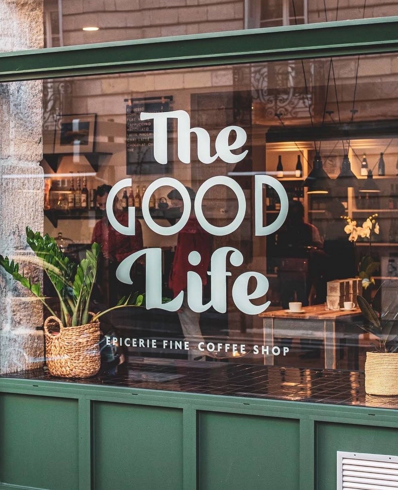
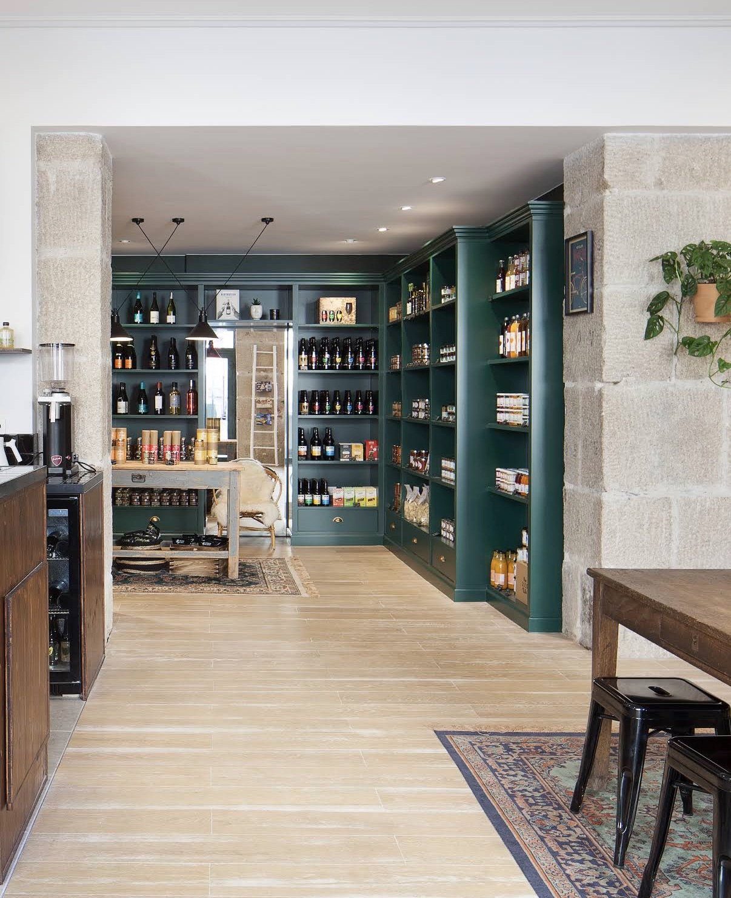
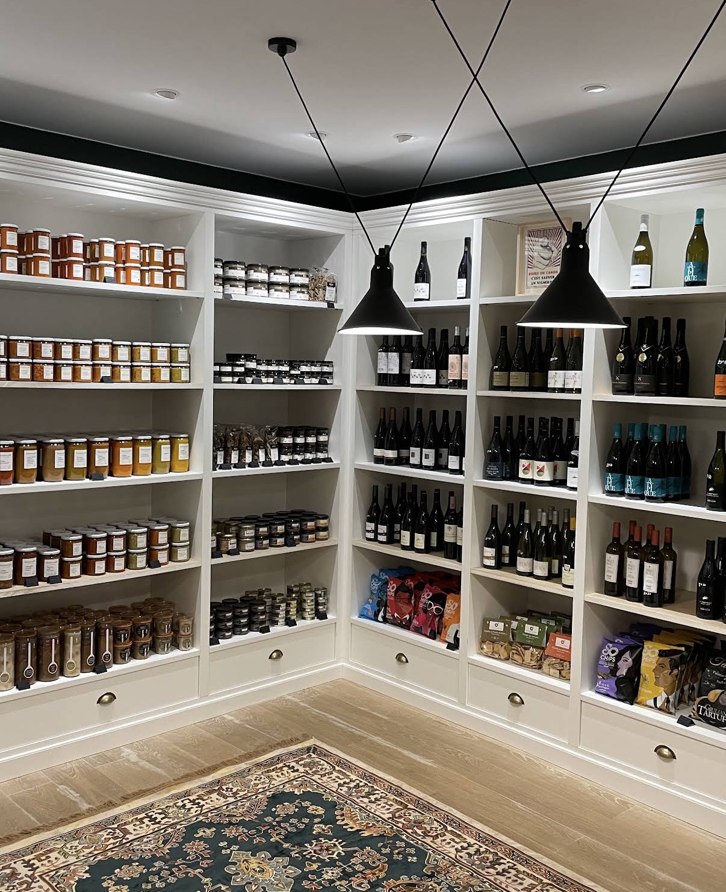
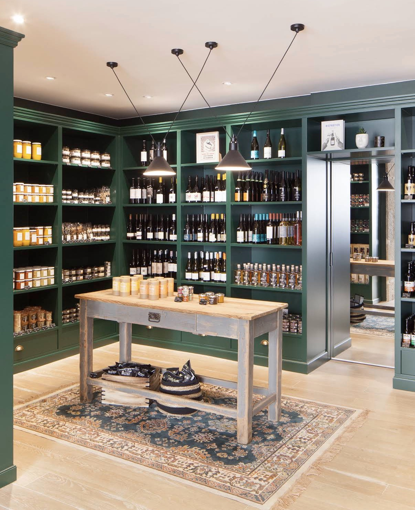

Des produits présentés comme des bijoux, un café de spécialité qu'on sirote à la grande table — derrière la devanture verte de la rue Mercœur.
La belle vie, tout simplement
Derrière la devanture verte du 17 rue Mercœur, Myriam a ouvert The Good Life en février 2022, après vingt-cinq ans passés à vendre de belles choses.
L'idée : un endroit où l'on vient chercher un produit rare, et où l'on reste pour un café. Entre les murs de pierre et les rayonnages vert bouteille, chaque bocal, chaque bouteille et chaque tablette a été choisie une à une.

« Un carrefour de rencontre pour le quartier. »
Myriam, fondatrice
- Ouverture
- 2022
- Références
- ≈ 400
- De métier
- 25 ans
- Grande table
- 1
Les rayons


Au comptoir
The Good Life
— Les boissons —
- Espresso
- Flat white
- Cappuccino
- Latte macchiato
- Chaï latté
- Chocolat chaud
- Matcha fouetté
- Thés fins
— Les douceurs —
- Lemon cake
- Carrot cake
- Cookies à l'anglaise
Café de spécialité torréfié à Nantes.
Lait d'avoine sur demande.
Merci, à bientôt !
Une grande table à partager, au milieu des rayons : on vient pour un espresso, on reste un peu plus longtemps que prévu.
Passer nous voir
Ouvert
Mardi — Samedi
9h — 19h
Fermé
Dimanche & lundi
On se repose
Bon à savoir
Sans réservation. Entrée et salle accessibles aux personnes à mobilité réduite.
À tout de suite !